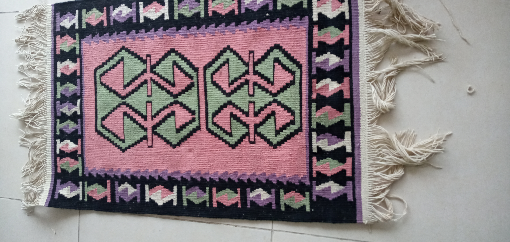
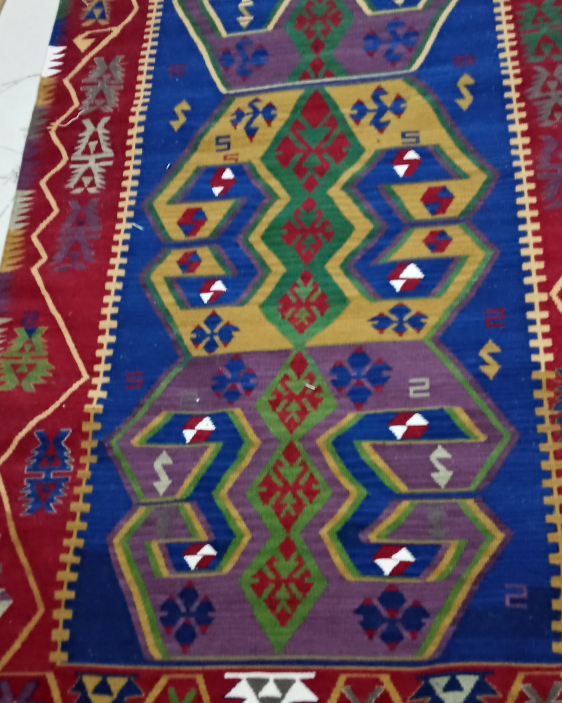
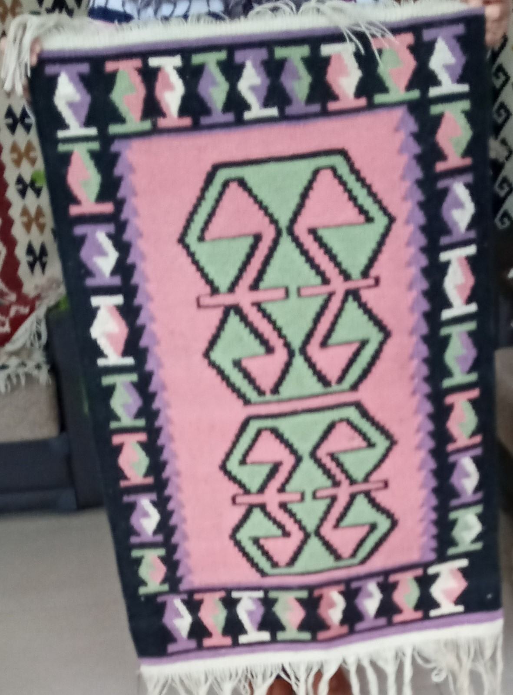
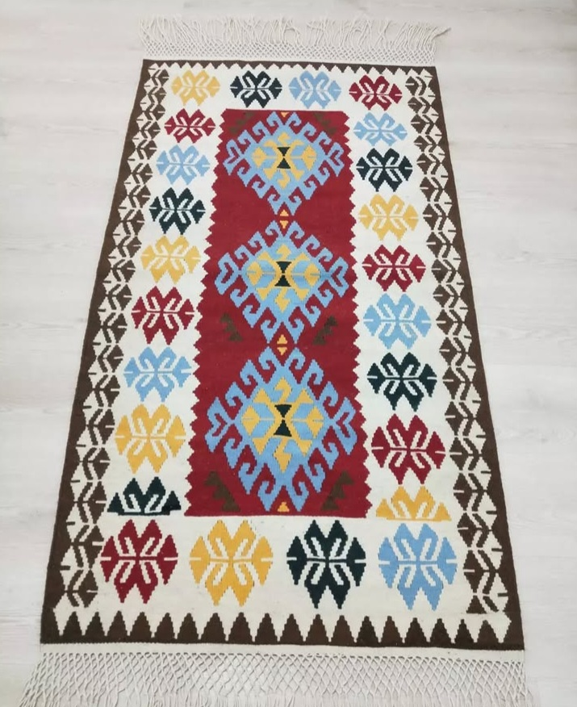
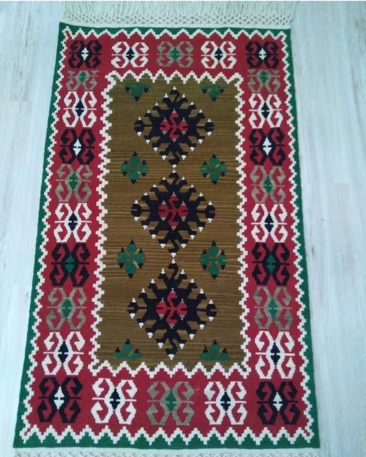
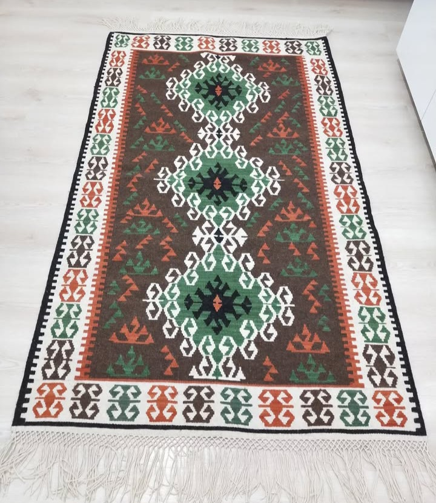
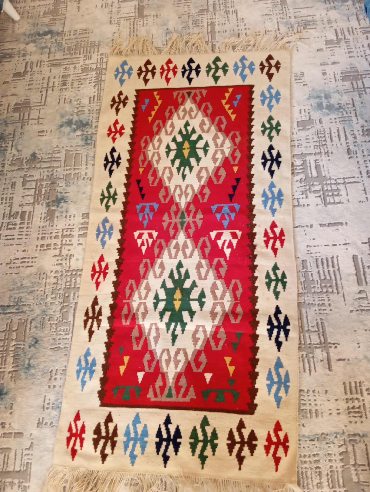

El Emeği Sanat Eserleri

Aslan Yelesi

Koç Boynuzu

Koç Boynuzu

Koç Boynuzu 2

Koç Boynuzu 3

Ejderha Motifi

Su Yolu Motifi

Zincir Motifi

Zincir Motifi
Daha fazla eser yakında eklenecektir.